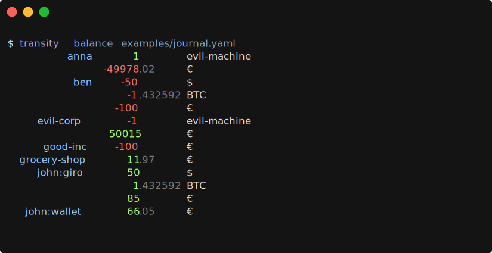
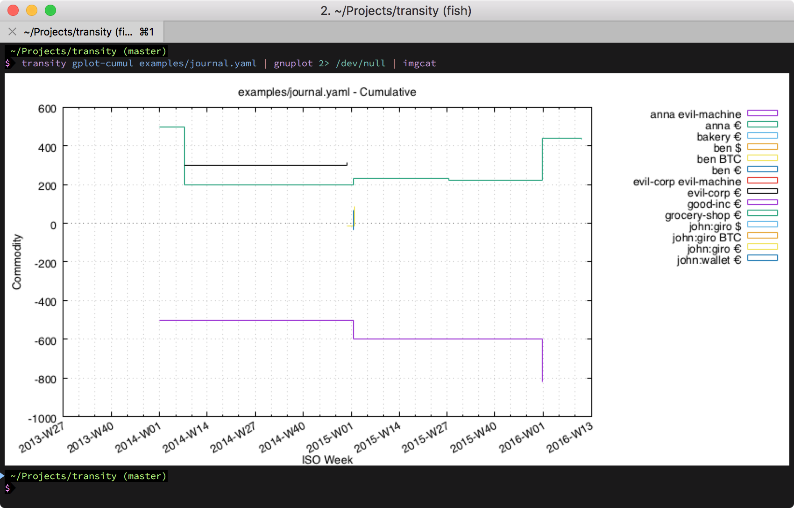

Transity - The Future of Plain Text Accounting
TLDR: We found existing plain text accounting tools unsatisfactory, so we developed Transity. It models financial flows in terms of transactions and not debited / credited accounts. Furthermore, its journal format is based on YAML and can therefore easily be processed by 3rd party tools. It's written in PureScript and published under a ISC license.

At Feram we love good CLI tools. For many tasks a CLI tool is just as good as, or even better than a GUI. CLI tools also have the advantage that their developers don't have to waste their time building and maintaining a useless GUI, but can instead use the time to improve the tool itself.
One tool we've especially come to rely on is Ledger and it's unofficial successor Hledger (called "ledger-likes"). Over the last year we used them regularly to track and manage our finances. And while they served us well, we always felt that their way of modeling transactions was somewhat unintuitive, complicated and even incomplete.
Legacy Problems
The main problem is that existing accounting tools are historically based on the notion of an account. You add money (debit) and you remove money (credit). If this sounds backwards to you, read this explanation.
For example you first get 50 € from Anna and then you buy some food for 20 €.
| Account | Amount |
|---|---|
| Cash on hand | 50.00 € |
| Cash on hand | -20.00 € |
In order to simplify adding up the values with pen on paper (!), accountants started to use separate columns for debit and credit.
| Account | Debit | Credit |
|---|---|---|
| Cash on hand | 50.00 € | |
| Cash on hand | 20.00 € |
Simple, but also incomplete. Where did the money come from? Where did it go? This led to double entry bookkeeping. Whenever you add some money to an account you have to remove the same amount from another one.
| Account | Debit | Credit |
|---|---|---|
| Cash on hand | 50.00 € | |
| Anna | 50.00 € | |
| Food | 20.00 € | |
| Cash on hand | 20.00 € |
But you must never forget a posting, cause otherwise your accounts won't balance.
| Account | Debit | Credit |
|---|---|---|
| Cash on hand | 50.00 € | |
| Anna | 50.00 € | |
| Cash on hand | 20.00 € |
Oops, where did the money go? 🤷♂️
If this looks (and sounds) confusing or too complicated, you're not alone! It made sense in former times as this layout makes it easier to add up the amounts by hand, but not in times of computers.
So how can we simplify it? It's actually quite easy: We just have to model it in terms of transactions, and not accounts.
| From | To | Amount |
|---|---|---|
| Anna | Cash on hand | 50 € |
| Cash on hand | Food | 20 € |
- Simple - No more confusing debit / credit / asset / liability mumbo jumbo
- Intuitive - Just like you would talk about it
- Safe - It's obvious how to fill out the fields and hard to miss one
Together with some further changes it yields a easier understandable, more robust and more complete representation of accounting!
Comparison with Ledger-likes
Now that we've clarified the theoretical concept, how is this implemented in the field? Ledger-likes as well as Transity use a journal file to capture all financial data.
main.journal for Hledger:
2018-05-28 Gift for good grades
assets:cash-on-hand 50 €
income:anna -50 €journal.yaml for Transity:
owner: john
commodities:
- id: €
entities:
- id: john
accounts:
- id: cash-on-hand
- id: anna
transactions:
- utc: '2013-12-31 12:00'
note: Gift for good grades
transfers:
- from: anna
to: john:cash-on-hand
amount: 50 €While Transity's syntax is a little more verbose, it has several advantages:
- Uses the
from->tosemantic I explained earlier - Standardized YAML format is parseable in every major programming language
- Human readable without prior knowledge
- Fully extensible (additional fields are ignored by Transity)
- Safe against typos and incorrect entries as referenced commodities and entities must be declared first
Viewpoint of Journal
Another big problem of ledger-likes is the viewpoint dependence of the journaling format. From the viewpoint of John the transaction looks like this:
2018-05-28 Gift
assets:cash-on-hand 50 €
income:anna -50 €From the viewpoint of Anna, however, the transaction looks like this:
2018-05-28 Gift
expenses:john:cash-on-hand 50 €
assets:cash-on-hand -50 €This means if you want to model the finances of several entities simultaneously, e.g. your finances, your partner's, your children's and your company's, you'd have to create a own ledger file for each entity and duplicate the entries.
In Transity on the other hand, one simply needs to change the owner: john to owner: anna or use a CLI flag to change the viewpoint and Transity automatically changes the output accordingly.
This feature is still in development and only partially included in the latest release.
Sub accounts vs. Tags
If you want to track compound spendings for a certain category (e.g. food), you'd model it in ledger-likes as a sub-account like this:
2018-05-26 Buy milk
expenses:food 2.25 €
assets:cash-on-handBut what if the expense is part of another category as well, like expenses for your vacation? Well, you'd be at a loss. There is no good way to model this in ledger-likes without getting really hacky.
In Transity, however, accounts and tags are separate fields and therefore you can simply assign tags to transactions to capture the category.
You could for example assign the milk commodity a default food tag and assign a vacation tag to the particular transaction.
commodities:
- id: milk
tags: [food]
transactions:
- utc: '2018-05-26 17:53'
tags: [vacation]
transfers:
- from: john:cash-on-hand
to: buynow
amount: 2.25 €
- from: buynow
to: john
amount: 1 milkPlease be aware that filtering by tag is still in development and only partially included in the latest release.
Due to the extensive modeling of the transaction, you don't even need a description for it. A "Buy milk" note would not contribute any additional information.
Visualizations / Plots
Ledger supports a special output format which can be piped into Gnuplot to visualize an account balance over time, but you need to know the intrinsics of Gnuplot to use it. Hledger has its own Web UI, but it's not packaged with Hledger on all platforms per default.
Transity, on the other hand, has first class support for Gnuplot and provides commands which can be piped straight into Gnuplot:

Check out the plotting documentation for more examples.
This were the major differences of Transity to ledger-likes. There are, however, several more, like e.g. high precision timestamps. For a complete list of Transity's features make sure to check out the GitHub page.
We're looking for forward to your feedback and we also invite you to contribute on GitHub to extend the functionality of Transity. Any help is very appreciated! 😊
Happy accounting!
PS: I'll also be at the ZuriHac 2018 in Zürich at the end of the week and work on Transity. If you happen to be there as well, you're welcome to join me!